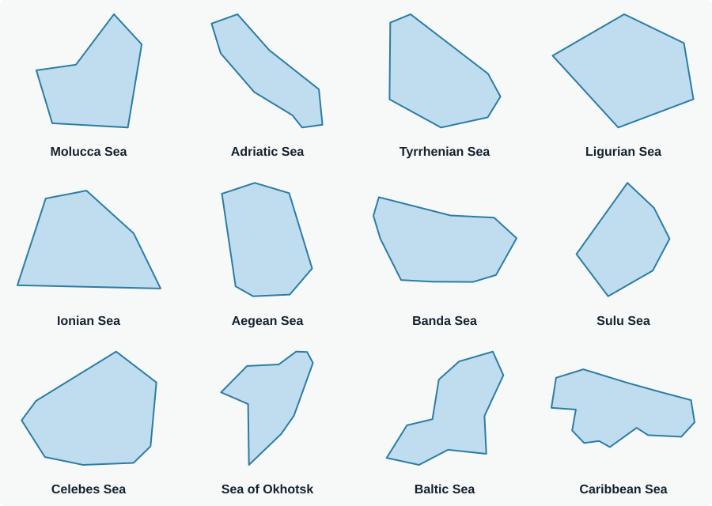
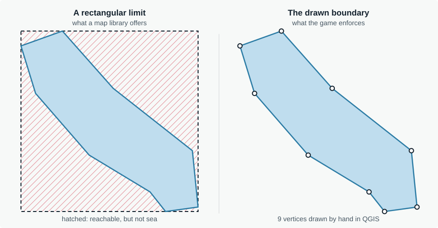

GeOlympic Games
Every round shows a circular window onto real, unlabelled relief and asks one question: where is this? The project began as a test of whether topography alone can carry a recognition game, the way a flag or a street photo does.
The idea
Most geography games lean on a crutch: a labelled map, a flag, a street photo. I wanted to know whether the shape of the land alone is enough. Can you recognise a city from the relief around it, the way you would recognise a face?
I looked at a few concepts before choosing one to prototype: rotating 3D country outlines, dragging a flag onto a map, and a plain topographic map with every label removed. The flag game already exists elsewhere, so I dropped it, and I built the unlabelled map first. A few iterations in, it worked. Mountain-locked cities, coastal cities, islands and open seas each turned out to need their own mechanics, so the game is split into separate series with their own rules.
How a round works
A session is eight rounds worth 1,000 points. Each round is 100 base points plus 25 for answering within five seconds (three in the hard-timer mode). A wrong guess does not end the round: the circle zooms out one level and the base score drops. You answer by multiple choice or by typing the name.
| Series | Places | What you see |
|---|---|---|
| Mountain cities | 13 | Real relief in a circle, with no coastline to lean on |
| Coastal cities | 14 | Relief with shoreline, bays and deltas |
| Islands, whole view | 21 | The island fitted to its outline and rotated at a random angle, one guess |
| Islands, relief | 21 | The zoomed circle applied to islands |
| Seas | 12 | A pannable patch of land relief around the sea, unlimited guesses |
| Seas, hard | 12 | Underwater topography only, with no visible coastline |
Places are chosen for how well their terrain reads, from well-known cases like Hong Kong and Cuba to more distinctive ones like Sarajevo, Bogotá or Sulawesi. Islands whose shape gives the answer away, such as Australia or Greenland, are left out on purpose.
How it is built
The whole game is a single HTML file: no build step, no backend, no framework. It is hosted on GitHub Pages.
- MapLibre GL JS draws the map. It switches between two styles depending on the mode: an OpenTopoMap relief raster, which is genuinely free of place names, and a custom MapTiler bathymetric style for the hard sea mode.
- Island outlines come from Natural Earth (50 m) through
world-atlasandtopojson-client. Borneo and New Guinea are cut from the physical landmass rather than from a single country’s polygon, so the shape is not truncated at a border. - Sea boundaries are twelve polygons I drew by hand in QGIS, five to sixteen vertices each.

Decisions worth explaining
Sharper tiles by rendering twice as large
The map is drawn at twice its visible size and scaled back down with CSS. MapLibre therefore requests tiles one zoom level finer, and a clean downsample looks sharp where an upscaled tile looks blurry. The extra level is capped at each source’s real maximum so the game never asks for tiles that do not exist. Padding values in the code have to be doubled as well, because they are measured in that larger pixel space.
No waiting between rounds
Waiting for tiles would eat into a fast player’s speed bonus. While a round is played, the game drives a second, invisible map to the next location, so the browser cache is already warm when the next round starts.
A boundary that matches the sea
A map library limits panning to a rectangle, and a sea is not a rectangle. The bounding box of the Adriatic is mostly Italy and the Balkans. The game therefore checks the player’s view against the hand-drawn polygon in real time, and a red vignette warns for as long as the view sits at or past the edge.

One projection per kind of round
Terrain rounds use MapLibre’s globe projection, which avoids Mercator’s distortion near the poles and matters for Antarctica. Seas and whole-island rounds use plain Mercator, because the globe’s pan-boundary and rotated-fit maths were unreliable. The code tracks the active projection and only switches when it really changes: switching in the middle of a camera move produced a broken frame.
A debug mode for the content
Adding ?debug to the address steps through every place in every series, with direct access to each zoom level and each
viewpoint. It exists to catch bad viewpoints and badly drawn sea limits without playing full sessions.
What I learned
A place has to earn its spot. Flat, dry cities such as Phoenix show almost nothing on a relief map, so Phoenix was replaced by Athens. I now choose places for how well their terrain reads, not for how famous they are.
The data source decides the game. My first version used a custom MapTiler style, and the look was not what I had in mind. While testing sources in QGIS I found a relief-only OpenTopoMap tile endpoint with no place names, which was exactly the look I had in mind.
Know where your data stops. SRTM, the elevation model behind most relief tiles, does not cover polar latitudes, so Antarctica mostly shows ice. The game therefore uses a few hand-picked coastal viewpoints there and never shows the whole continent.
Playtesting drives the engineering. The prefetching and the continuous warning at a sea’s edge both exist because playing the game showed what was wrong.
How I worked. I built this with an AI coding assistant. I wrote the brief for each iteration, chose the concept, the places and the data, drew the sea boundaries, tested every build on real maps and decided what stayed. The assistant did most of the typing.
What comes next
- Load the place data from GeoJSON files instead of keeping it in the HTML, so the list can grow.
- More series, rivers among them.
- Address the known limits: a simplified flag hint for multi-country islands, and no polar relief data for Antarctica.
Data and credits
Relief tiles by OpenTopoMap (CC-BY-SA), built on OpenStreetMap and SRTM data. Bathymetric style by MapTiler, built on OpenStreetMap data. Island geometry from Natural Earth. Mapping library: MapLibre GL JS.